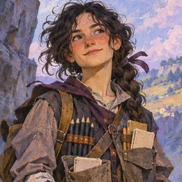
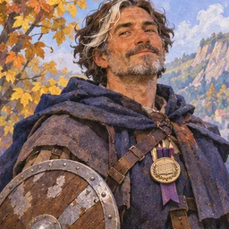
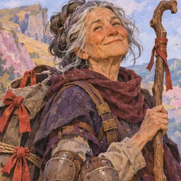

Нерин Сосновый Шаг
воин 3 · ОЗ 31 · КД 11 · Скорость 30 фтСтраховщик полевых выходов; первый герой достаточного ядра
Короткий плащ, потёртые перчатки и аккуратно подписанные верёвочные мешки.
Нерин пришёл во Второе Крыло научиться выбирать спутника без обещания всегда быть самым сильным.
Открыть фигурку для поля
Оружие и заклинания
Оружие · Длинный меч, Ручной топор

Тася Угольная Лента
плут 3 · ОЗ 24 · КД 13 · Скорость 30 фтРазведчица обходов; второй герой достаточного ядра
Высокие сапоги, угольные карандаши за ремешком и свободные карманы для собственных записок.
Тася привыкла искать короткую дорогу и хочет понять, когда долгий путь лучше для всей группы.
Открыть фигурку для поля
Оружие и заклинания
Оружие · Рапира, Короткий лук

Омел Тёплый Камень
жрец 3 · ОЗ 24 · КД 11 · Скорость 30 фтПолевой помощник и спокойный собеседник; третий герой достаточного ядра
Медный знак очага на шнурке, дорожная сумка и закатанные до локтя рукава.
Омел умеет утешать словами и приехал учиться замечать, когда нужны руки, лестница или немного пространства.
Открыть фигурку для поля
Оружие и заклинания
Оружие · Боевой посох
Заклинания · Лечащее слово, Обнаружение магии

Элша Семь Полей
волшебник 3 · ОЗ 20 · КД 12 · Скорость 30 фтЛюбознательная ученица волшебства; дополнительное место
Широкий капюшон, разные застёжки на рукавах и тетрадь с полями шире самого текста.
Элша охотно проверяет свои объяснения на деле, но хочет научиться не превращать каждого знакомого в загадку.
Открыть фигурку для поля
Оружие и заклинания
Оружие · Боевой посох
Заклинания · Обнаружение магии, Туманный шаг

Велт Крапчатый Щит
воин 3 · ОЗ 31 · КД 11 · Скорость 30 фтПоздний ученик и носильщик общего снаряжения; дополнительное место
Седая прядь, короткий дорожный щит и учебный значок, приколотый вверх ногами по рассеянности.
Велт впервые учится рядом с людьми младше себя и хочет спокойно быть новичком, не выдавая уверенный голос за опыт.
Открыть фигурку для поля
Оружие и заклинания
Оружие · Длинный меч, Ручной топор

Кора Кривой Штрих
плут 3 · ОЗ 24 · КД 13 · Скорость 30 фтНаблюдательница движений; дополнительное место
Клетчатый платок и колпачки на карандашах, привязанные к сумке толстой ниткой.
Кора любит рисовать животных в движении и приехала работать со спутниками, которые сами решают, когда позировать.
Открыть фигурку для поля
Оружие и заклинания
Оружие · Рапира, Короткий лук

Рин Янтарная Пуговица
волшебник 3 · ОЗ 20 · КД 12 · Скорость 30 фтУченик практического волшебства; дополнительное место
Яркий жилет, мягкие сапоги и старая деревянная линейка вместо торжественного указательного жезла.
Рин хочет великого приключения, но хорошо чувствует момент, когда эффектное решение делает чужую задачу опаснее.
Открыть фигурку для поля
Оружие и заклинания
Оружие · Боевой посох
Заклинания · Обнаружение магии, Туманный шаг

Яна Неровная Ступень
жрец 3 · ОЗ 24 · КД 11 · Скорость 30 фтДорожная служительница и ученица школы; дополнительное место
Посох удобной высоты, красные тесёмки на сумках и лёгкие наколенники поверх дорожной одежды.
Яна умеет организовать привал и решила узнать, каково путешествовать рядом с тем, кто видит склон иначе человека.
Открыть фигурку для поля
Оружие и заклинания
Оружие · Боевой посох
Заклинания · Лечащее слово, Обнаружение магии